5a: Marks, Channels
Applied Perception
Marks
Marks are your basic graphical geometric elements.
E.g. points, bars, circles, lines, etc.
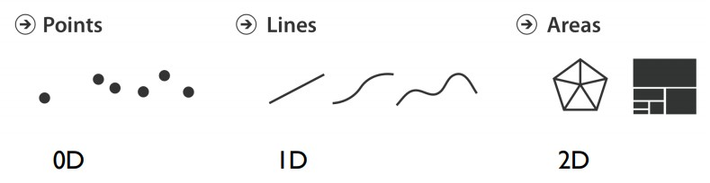Channels
(aka Visual variables)
Channels encode information as attributes / properties of a mark.
E.g. Position, shape, size, color, etc.
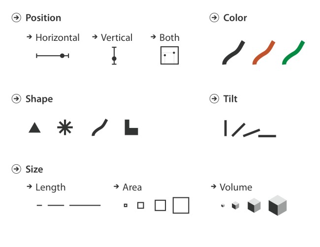Visualization:
Collection of marks (expressed via channels)
A visualization represents data using a collection of graphical marks such as bars, lines, and point symbols.
The attributes of a mark — such as its position, shape, size, or color — serve as channels in which we can encode underlying data values.
Channel: Identity vs Magnitude
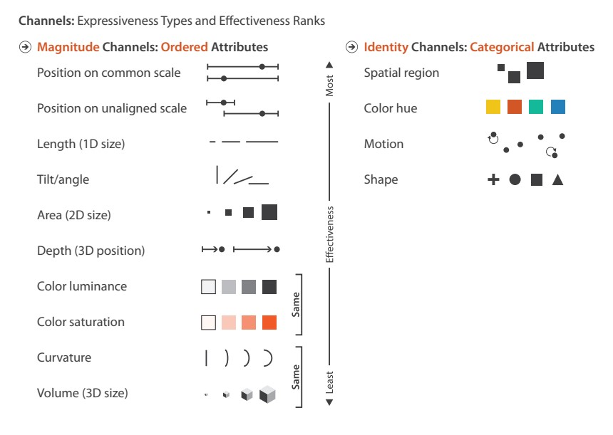This fruit chart encodes two data attributes as bar marks.
- It encodes number of people - a quantitative data set - as a vertical spatial magnitude channel.
- It encodes type of fruit - a nominal data set - as a horizontal spatial identity channel.
- Type of fruit is also encoded as a redundant color identity channel.
How many channels are there in this chart? What data scales are encoded?

How many channels are there in this chart? What data scales are encoded?
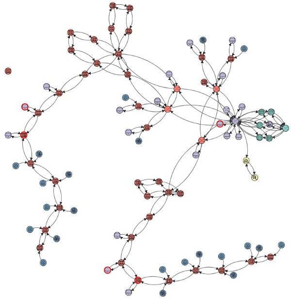Channel: Expressiveness
The expressiveness principle dictates that the visual encoding should express all of, and only, the information in the dataset attributes.
Color channel violation of expressiveness principle:
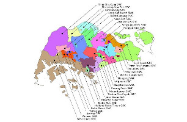Channel: Effectiveness
The effectiveness principle dictates that the importance of the attribute should match the salience of the channel; that is, its noticeability.
The most important attributes should be encoded with the most effective channels to be noticeable, and so on and so forth.
Channel effectiveness can be described by these principles:
- Accuracy
- Discriminability
- Separability
- Salience (pop-out)
- Grouping
Channel ranking (based on effectiveness)
Visualization Analysis and Design, chapter 5, Marks and Channels, Munzner
Human perception
Weber-Fechner Law
Weber: The minimum increase of stimulus which will produce a perceptible increase of sensation is proportional to the pre-existent stimulus.
Fechner: The intensity of our sensation increases as the logarithm of an increase in energy.
Weber-Fechner Law
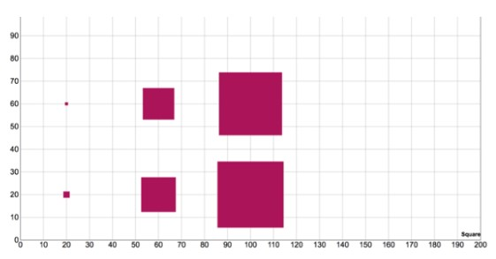Example of Weber's law using area
Weber-Fechner Law 2

Steven's Power Law
Psychophysics: the subfield of psychology devoted to the systematic measurement of general human perception.
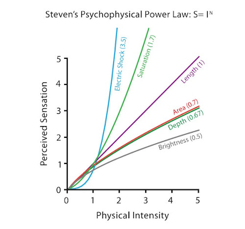Graphical Perception: Cleveland and McGill
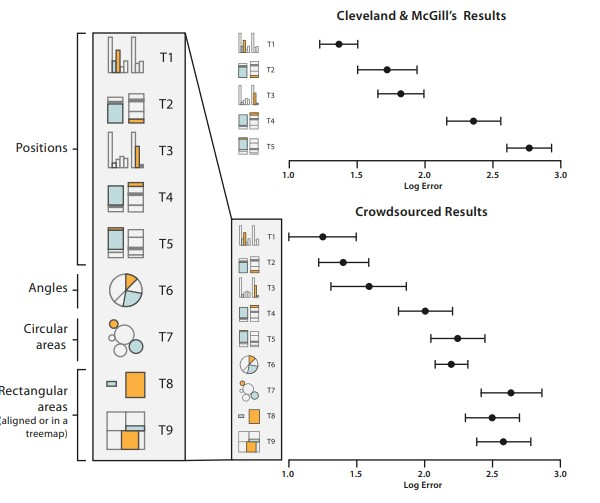Reading: How William Cleveland Turned Data Visualization Into a Science
Reading: Ranking Visualizations of Correlation Using Weber's Law
Channel effectiveness: Accuracy
Pick higher ranking channels (with reason).
E.g. Position > length > angles > area
Channel effectiveness: Accuracy
Example: Analyze profit over time for 3 categories
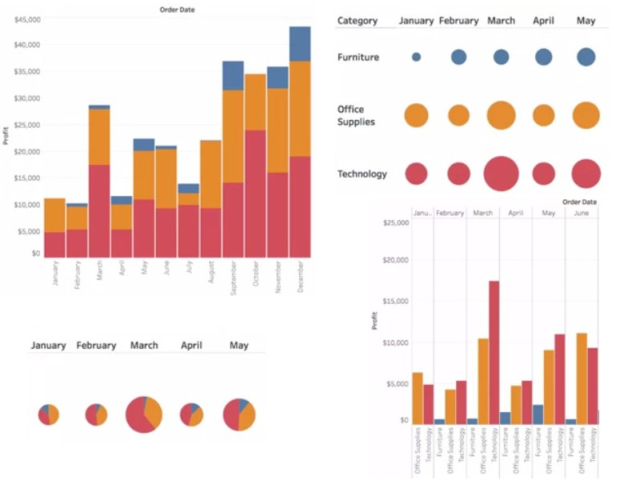
Channel effectiveness: Discriminability
Must be able to discriminate between a reasonable number of bins (typically max 5 to 7)
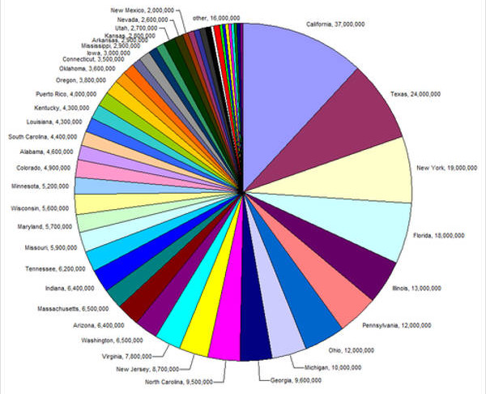So how to deal with lots of data? You use techniques like grouping, filtering or faceting (we'll cover in later lectures)
Channel effectiveness: Separability
Channels range from the seperable (e.g. position and hue) to the integral (e.g. multiple color scales)
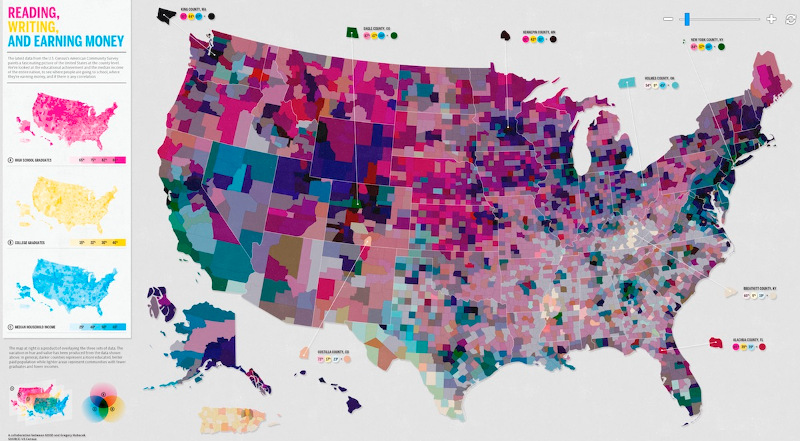Channel effectiveness: Salience (popout)
Many visual channels provide visual popout, where a distinct item stands out from many others immediately.
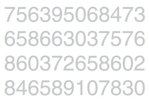Count the number of threes
Far easier, right? Using the color channel to popout elements.
Perception in visualization, Healey
Concepts: Pre-attention in vision (200 to 250 ms)
Many pairs of channels do not support popout, and 3 or more channels definitely do not. As a general rule, use popout for one channel only.
Channel effectiveness: Salience (popout)
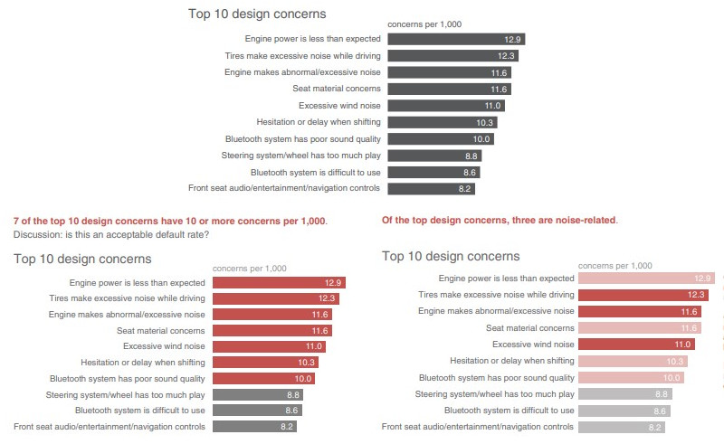Storytelling with Data: A Data Visualization Guide for Business Professionals, chapter 4, Nussbaumer
Concept: Change blindness
A phenomenon of visual perception that occurs when a stimulus undergoes a change without this being noticed by its observer.
Change blindness in User Interfaces
So how to deal with this? Minimize changes, keep changes in the focal view, or use animations / transitions (we'll talk more about animations in later lectures)
Example: Elections SG
Channel effectiveness: Grouping
Gestalt principles of grouping
A classification on how we group similar elements and recognize patterns.

Channel effectiveness: Grouping
Color channel violation of gestalt similarity principle:
Reading: Gestalt principles and income inequality, Silas Bergen
Questions?
Chi-Loong | V/R